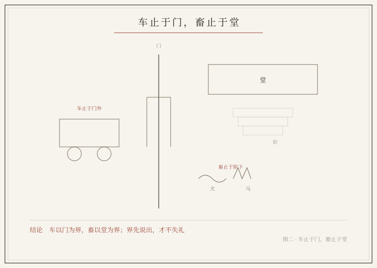

曲礼上 · 一·一百一十九 · 第 117 课
三件小禁：宾客的车不驶入主人大门；妇人不立乘；犬马不牵上堂。
说什么事：客车不入大门。妇人不立乘。犬马不上于堂。
落在哪一层：仪，兼及礼意。讲的是「界」。
为何编在此位：上节论御者授绥，此节论车、人、畜各止于何处。授受有界，行止亦有界。
【经】客車不入大門。婦人不立乘。犬馬不上於堂。
【注】謙也。異於男子。非摯幣也。
客车不入大门 注「谦也」。疏引《公食大夫礼》「宾之乘车在大门外西方」，注「宾车不入门，广敬也」；又引《觐礼》「偏驾不入王门」；「墨车龙旂以朝」者，得入大门，但不得入庙门。
妇人不立乘 注「异于男子」。疏「立，倚也。妇人质弱不倚乘……男子倚乘，妇人坐乘，所以异也」。
犬马不上于堂 注「非挚币也」。疏「犬则执绁，马则执勒，以呈之耳，非贽币故也」；「犬马用充庭实而已」。
挚币 羔、雁、锦、玉之属，可上堂者。
宾客的车不驶入主人大门。妇人不倚着乘车站立。犬马不牵上堂。
三句三界：车止于门，人别于男女，畜止于堂。界的划法各不同——车以门为界，是让；人以立坐为界，是别；畜以堂为界，是分。皆是把「不该到的地方」提前说出。
第一层 车不入大门 注一字「谦」。车是主人之势，停在门外，是把势留在门外。
第二层 妇人不立乘 疏以「质弱」为说，而以「坐乘」为别。这条有时代之限，不可径移于今。
第三层 犬马不上堂 注辨之甚明：犬马是「庭实」，不是「挚币」。堂是行礼之地，畜牲只能到庭。
第四层 三界之同 三句所禁，都不是大事：一辆车、一个站姿、一条狗。而礼正在这些小处划界，因为大事人人自警觉，小事才见真章。
与今日何干 进门之前，先想清楚哪些东西该留在门外。车、伞、情绪，都是。
| 左 | 右 |
|---|---|
| 客车不入大门 | 谦也，广敬，势留门外 |
| 妇人不立乘 | 异于男子，坐乘 |
| 犬马不上于堂 | 非挚币，庭实而已 |
| 挚币 | 羔雁锦玉，可上堂 |
| 堂与庭 | 行礼之地与陈物之地 |
画一处宅院的门与堂：门外停着一辆空车，车辕朝门、车未入门；门内是一段台阶通向堂，堂前地面上画着一条狗与一匹马的极简轮廓，二者止于阶下、未上阶；堂上留空。三者之间以门线、阶线两道横线分隔。不画人、不写文字。赭色只用在门槛那一道线上。
